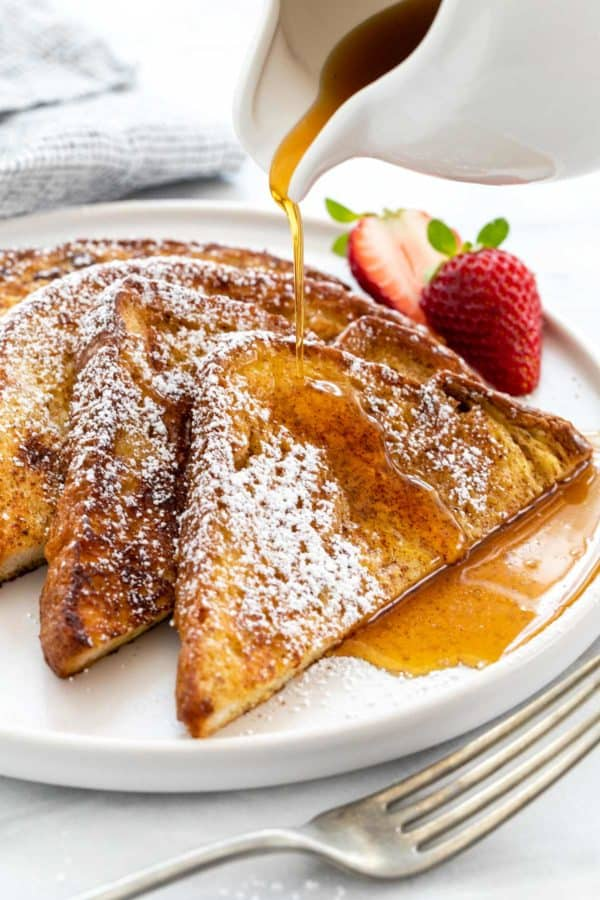

French Toast

Description
French toast is a simple yet classic breakfst dish. It's super easy to make
and it tastes great!
Ingredients
- 6 slices bread
- 1/2 cup milk
- 4 eggs
- 1/4 teaspoon cinnamon
- 1/2 teaspoon vanilla extract
- 2 tablespoons butter
Steps
- Combine milk, eggs, cinnamon, and vanilla in a bowl, whisk together
- Use butter to coat the bottom of your frying pan
- Quickly dip a slice of bread in the mixture then transfer to the frying pan. Cook until brown on both sides
- Serve with maple syrup or powdered sugar as desired